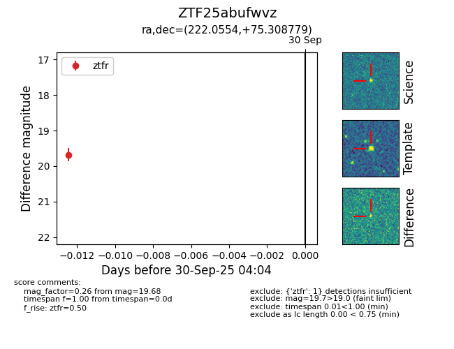

FINK: ZTF25abufwvz
Lasair: ZTF25abufwvz
ALeRCE: ZTF25abufwvz
ZTF25abufwvz (ztf,fink)
equatorial (ra, dec) = (222.0554,+75.30878)
galactic (l, b) = (113.6859,+39.65110)

last ztfr=19.68
1 ztfr detections